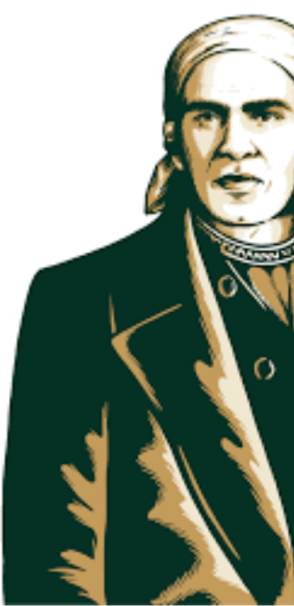

El 30 de septiembre en México es el natalicio de José María Morelos y Pavón
|
Nacido en 1765, Conocido como el "Siervo de la Nación", fue el genio militar y político que tomó las riendas de la Independencia tras la muerte de Miguel Hidalgo.
|
¿Qué sucedió e hizo relevante esta fecha?
El 30 de septiembre de 1765 nació en Valladolid (hoy Morelia, nombrada así en su honor) uno de los estrategas más brillantes de la historia americana. Morelos no solo ganó casi todas sus batallas en el sur del país, sino que diseñó las bases del Estado mexicano.
En 1813 presentó los Sentimientos de la Nación, un documento precursor donde declaró la independencia absoluta de España, la abolición total de la esclavitud, la eliminación de las castas y la división de poderes.
Mitos y Curiosidades de Morelos y el 30 de Septiembre
- El mito del paliacate por migraña: La creencia popular dice que Morelos usaba siempre un paliacate en la cabeza para calmar dolores intensos de migraña. Aunque sí sufría de cefaleas crónicas, los historiadores señalan que también lo adoptó por razones de higiene y practicidad militar, ya que sudaba copiosamente durante las campañas en las regiones calurosas del sur de México y el paliacate evitaba que el sudor le nublara la vista en combate.
- Su verdadera "raza" oculta: En su acta de bautismo, Morelos fue registrado como "español" (criollo) porque su madre quería protegerlo de la discriminación colonial. Sin embargo, genéticamente era de origen mestizo o mulato (su padre era un carpintero de ascendencia indígena y africana). Irónicamente, él mismo se encargaría de destruir el sistema de castas años más tarde.
- El elogio de Napoleón Bonaparte: Existe la famosa leyenda de que Napoleón Bonaparte, impresionado por las tácticas de guerrilla de Morelos frente al poderoso ejército español, declaró: "Con dos generales como Morelos, conquistaría el mundo". Aunque no hay una carta física que lo compruebe, la frase quedó inmortalizada como reflejo de su gran genialidad táctica.
- Hidalgo fue su profesor: Morelos no conoció a Miguel Hidalgo en la guerra; se conocían desde antes. Morelos ingresó de adulto al Colegio de San Nicolás en Valladolid, donde Hidalgo era el rector y su maestro de gramática y retórica. Cuando inició la guerra, Morelos buscó a su antiguo maestro solo para ofrecerse como capellán, pero Hidalgo vio su potencial y lo nombró jefe del ejército del sur.
|

|